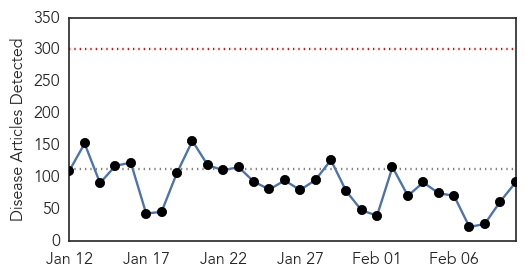
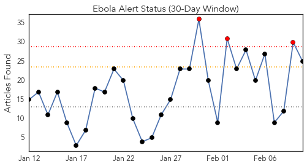
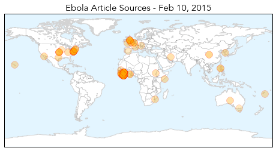
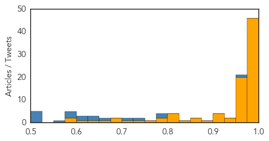

Ebola
30-Day Web Trend
0 alerts, 0 warnings

30-Day Twitter Trend
3 alerts, 0 warnings

Article Locations
Article Confidences
Top Articles:
- 1.000
- Obama to pull out Ebola troops
- 1.000
- Ebola-hit Sierra Leone quarantines 31 health workers
- 1.000
- Does Ebola immunise as well as kill?
- 1.000
- Ebola outbreak: Slow response from British government 'cost lives'
- 1.000
- Ebola death toll tops 9,000: Spike in deaths shows disease not yet under control
- 1.000
- Ebola Outbreak News 2015: Cases Rise In West Africa As Virus Wipes Out 20 Percent Of Sierra Leone's Surgeons
- 1.000
- US to withdraw troops from Ebola mission in West Africa
- 1.000
- New studies model a deadly epidemic
- 1.000
- Africa: Fight against Ebola epidemic far from over as virus mutates
- 0.999
- Most U.S. troops will return from Ebola fight by end of April
- 0.999
- DFID 'far too slow' on Ebola outbreak
- 0.999
- As Ebola Outbreak Slows, World Health Body Shifts Focus
- 0.999
- Vermont Senator Leahy statement in Senate on lessons from the Ebola Epidemic
- 0.999
- UK should resume flights to Ebola-hit nations-parliamentary watchdog
- 0.999
- The UK’s response to the outbreak of Ebola Virus Disease in West Africa - Sierra Leone
- 0.999
- US to withdraw troops from Ebola mission in West Africa
- 0.998
- Obama to declare end of Ebola mission
- 0.998
- Ebola-hit Sierra Leone announces disease control agency
- 0.998
- “Ebola is not a natural disaster. It is a disease fostered by poverty…” Greens Senator Richard Di Natale on his trip to Liberia, Sierra Leone
- 0.996
- Shifting Focus in Ebola Countries
- 0.996
- Ebola Deaths, Infections on the Rise
- 0.996
- Ebola crisis: Government response 'far too slow'
- 0.995
- US Withdrawing Most Troops Fighting Ebola in West Africa
- 0.994
- UK should resume flights to Ebola-hit nations
- 0.994
- U.S. withdrawing most troops fighting Ebola in West Africa
- 0.994
- Search for an Ebola cure is gearing up, but there may be too few patients
- 0.993
- Ebola Diary: 'Plenti, plenti empty beds' but new challenges
- 0.993
- Sierra Leone halts Ebola workers' wages over 'ghostworkers', some workers strike
- 0.993
- Obama to Withdraw U.S. Personnel Fighting Ebola
- 0.992
- US pulls troops from Ebola-affected West Africa
- 0.990
- Sierra Leone to Prosecute Fraudulent Ebola "Ghostworkers"
- 0.989
- Guinea's Grand Imam Pulls No Punches In His Ebola Message
- 0.988
- Ebola watch continues; more quarantine facilities needed
- 0.987
- Obama To Withdraw Most Troops Fighting West Africa Outbreak
- 0.987
- FEATURE-Mistrust and machetes thwart efforts to contain Ebola in Guinea - TRFN
- 0.986
- U.S. Military to End Ebola Relief Mission in Liberia
- 0.985
- The Argonaut – The world responds to Ebola
- 0.984
- U.S. to withdraw nearly all troops fighting Ebola in West Africa
- 0.984
- Ebola outbreak exposed 'weakness' in global crisis response, 3 world leaders say
- 0.983
- Leaders to UN: We need better crisis response after Ebola
- 0.982
- Obama to withdraw most military personnel deployed to fight Ebola, officials say
- 0.980
- Conversion charter schools too often overlooked in debate
- 0.980
- Rand Paul's Fed fixation, analyzed
- 0.979
- UN through the lens Photographing Ebola the invisible enemy
- 0.977
- Mistrust and machetes thwart efforts to contain Ebola in Guinea
- 0.977
- U.K.’s Slowness to Act on Ebola Cost Lives, Lawmaker Panel Says
- 0.975
- Gov't Ebola backup team leaves for Sierra Leone
- 0.965
- Man faces criminal charges after Ebola outcry
- 0.964
- 'Positive' results for Ebola drug upsets plans for trials
- 0.956
- Liberia: Visiting President Conde exhorts Ebola nations
Showing top 50 articles...
Top Tweets:
- 0.947
- Number of Ebola cases decline internationally - U-T San Diego http://t.co/4y2bD5r3wC ebola EVD
- 0.941
- Sierra Leone to prosecute fraudulent Ebola "ghostworkers" - Reuters http://t.co/PFF7ukR8CP ebola EVD
- 0.921
- ICYMI: VDU's blog: Cases of Ebola virus infection can be exported any old time http://t.co/WwITUhRw1h
- 0.920
- Sarepta drug protects lab monkeys from Ebola - Reuters http://t.co/qHyVIbr5zF ebola EVD
- 0.881
- WHO: Ebola Deaths, Infections on the Rise - Voice of America http://t.co/i2S5qipTiT ebola EVD
- 0.877
- Reform After the Ebola Debacle - New York Times http://t.co/yNuXAexNxc ebola EVD
- 0.839
- 'Positive' results for Ebola drug upsets plans for trials - Science AAAS http://t.co/pyNTTM7WGv ebola EVD
- 0.830
- Haverfordwest Army medic returns from Ebola fight - BBC News http://t.co/JmF9NFTfE7 ebola EVD
- 0.799
- A decrease of Ebola cases in Sierra Leone can be credited to change in human behaviours AfricaStopEbola... http://t.co/h6bAQOkGEJ
- 0.785
- . The operational response of to the Ebola crisis in West Africa... http://t.co/OyY5JXhXyF
- 0.742
- As Ebola fades, questions arise over billions in US aid - Fox News http://t.co/en3OApCKSQ ebola EVD
- 0.700
- .@MSF_USA says instructing people early on in the Ebola outbreak a key gap in prevention http://t.co/eeyL9jm4p9
- 0.655
- Engineers in Africa: Their own view of Ebola mission - http://t.co/b2FRPHuRqJ http://t.co/nvFB5yOevp ebola EVD
- 0.655
- Engineers in Africa: Their own view of Ebola mission - http://t.co/b2FRPHuRqJ http://t.co/aZVf2k75zb ebola EVD
- 0.655
- Engineers in Africa: Their own view of Ebola mission - http://t.co/b2FRPHuRqJ http://t.co/IyYkA9yy3W ebola EVD
- 0.655
- Engineers in Africa: Their own view of Ebola mission - http://t.co/b2FRPHuRqJ http://t.co/3kpQrYSO7v ebola EVD
- 0.621
- Dallas County commissioners honor Ebola survivors - Dallas Morning News (blog) http://t.co/g4OLnP4BMU ebola EVD
- 0.615
- RT: Ebola survivor pleads: "See us as community members. Stop pushing us away". @UNICEF ebola"
- 0.573
- RT: "The government’s response to the Ebola crisis has been not just good; it’s been nothing short of spectacular." http://t.co/O53Q…
- 0.566
- The search for an Ebola cure is gearing up — but there may be too few patients. - Washington Post http://t.co/Ir5yfYN8HT ebola EVD
- 0.560
- RT: WHO Ebola update for Feb 9th (data only - not a situation report) http://t.co/2jOvx7h9it
- 0.533
- Temporal Changes in Ebola Transmission in Sierra Leone and Implications for Control Requirements http://t.co/1pvHhoSQHI
- 0.527
- FightingEbola innovators in top 5 most promising innovations 4 ebola response! http://t.co/UDo2HHGhOQ
- 0.508
- RT: Today, Sorie walked out Ebola-free from our Treatment Center in Sierra Leone! Our first survivor! ISurvivedEbola http://t.…
- 0.508
- RT: Today, Sorie walked out Ebola-free from our Treatment Center in Sierra Leone! Our first survivor! ISurvivedEbola http://t.…
Measles
30-Day Web Trend
22 alerts, 3 warnings

30-Day Twitter Trend
5 alerts, 0 warnings

Article Locations

Article Confidences

Top Articles:
- 0.995
- Latest Measles Count: 121 Cases in 17 States, D.C.
- 0.995
- Latest Measles Count: 121 Cases in 17 States and D.C.
- 0.992
- Vaccine controversy: Daycare promising 'vaccine-free environment' irks Ottawa Public Health
- 0.990
- Three more measles cases confirmed in Cook County
- 0.989
- New Case In Georgia, But Surrounding States Say They Are Prepared
- 0.988
- No measles cases reported in BHC area
- 0.986
- What’s in a measles vaccine? 4 things you need to know
- 0.985
- A few questions about measles
- 0.980
- Health Officials had confirmed first measles case in Georgia since it was last reported in 2012.
- 0.980
- California Warns Parents Against Intentionally Exposing Children With 'Measles Parties'
- 0.980
- Albany health officials watching measles outbreak, speak on the disease
- 0.979
- Check it out: Area health briefs
- 0.976
- The measles outbreak is growing in California
- 0.974
- The Belleville Intelligencer
- 0.973
- Why Measles Parties Are a Bad idea
- 0.973
- California warns against intentional measles exposures
- 0.973
- Georgia reports 1st measles case in 3 years, considered an imported case
- 0.967
- UPDATE 1-California warns against intentional measles exposures
- 0.966
- California warns against intentional measles exposures
- 0.966
- Alexander Says Vaccines Save Lives
- 0.966
- Alexander Says Vaccines Save Lives
- 0.966
- California warns against intentional measles exposures
- 0.965
- Calif. health officials warn parents on measles exposure
- 0.963
- Possible measles case under investigation in Fairfax County
- 0.963
- Measles and the Risks of Skipping Vaccines
- 0.962
- Vaccinations are a responsibility
- 0.958
- California warns against intentional measles exposures
- 0.956
- 4 confirmed measles cases in Pasadena
- 0.956
- FDA chief calls measles outbreak 'disturbing'
- 0.955
- Councilman Mike Fagan questions need for vaccines
- 0.955
- No sign of measles in Oxford County
- 0.955
- Georgia Infant Diagnosed With Disease
- 0.952
- Officials believe child in Manitoba with measles is an isolated case
- 0.951
- Illinois KinderCare Now Has 6 Infants, 1 Adult With Measles
- 0.950
- Meade School District educating parents on measles
- 0.949
- Is measles' return the 'New normal'?
- 0.948
- Is Measles' Return the 'New Normal'?
- 0.947
- Measles is expected topic for surgeon general visit
- 0.946
- Two more measles cases from Palatine day care center
- 0.945
- Measles outbreak spreads to 3 more states and D.C.
- 0.945
- Measles Outbreak Spreads In Chicago, Toronto; Not Related To Disneyland
- 0.941
- KFVS12 News & Weather Cape Girardeau, Carbondale, Poplar Bluff
- 0.936
- County Public Health Propagates Big Pharma Quackery and CDC Scientific Fraud
- 0.933
- New measles case confirmed in Cook County
- 0.932
- U.S. FDA Commissioner says measles outbreak 'alarming'
- 0.930
- Measles Outbreak
- 0.926
- Our view: Don't wait; vaccinate
- 0.924
- Measles seen in 18 states and D.C.
- 0.920
- Chicago measles case among 10 confirmed in Illinois
- 0.907
- More Texas Parents Say 'No' to Measles Vaccine Despite Nationwide Outbreak
Showing top 50 articles...
Top Tweets:
-
No tweets found for Feb 10, 2015